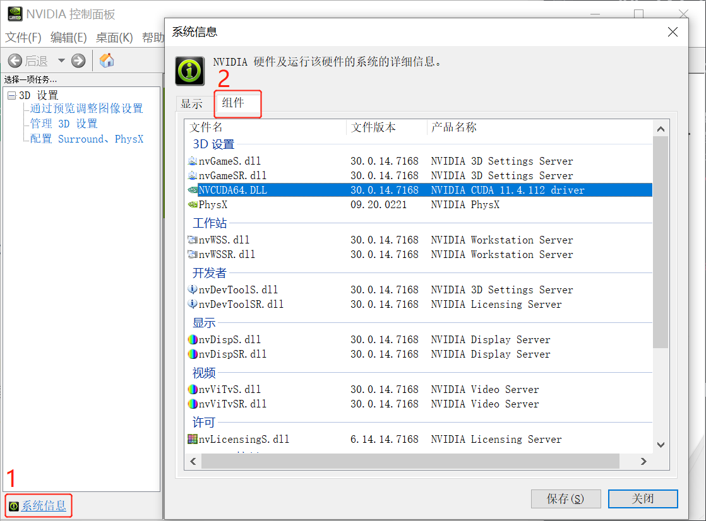
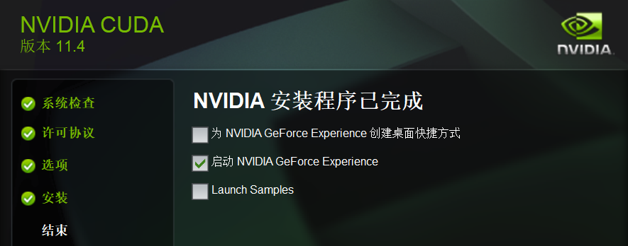
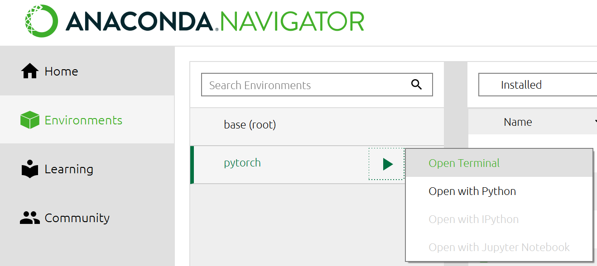
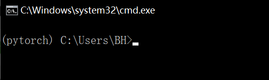
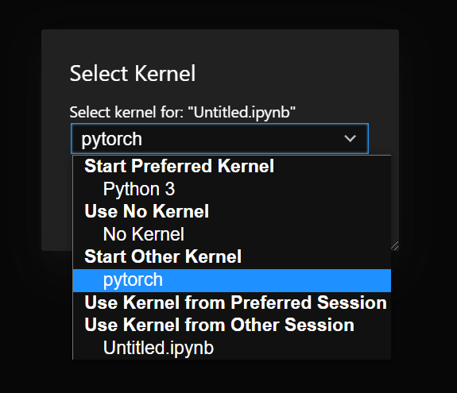

Datawhale - NLP based on Transformers
The notes are taken following DATAWHALE-CHINA‘s Natural Language Processing with the main contents in Chinese. The table below shows the contents and the tasks embeded with hyperlinks could be directly jumped into by clicking.
| INDEX | CONTENT |
|---|---|
| Preparation | |
| TASK01 | 1.1 NLP introduction 1.2 PyTorch and CUDA installation 1.3 Transformers and requirements installation |
| Theoretical knowledge | |
| TASK02 | 2.1 Attention 2.2 Transformers |
| TASK03 | 3.1 BERT 3.2 GPT |
| BERT exercise | |
| TASK04 | BERT model |
| TASK05 | BERT downstream tasks 5.1 Implementation 5.2 Training 5.3 Optimization |
| Transformers exersice | |
| TASK06 | Text Classification Hyperparameters Searching |
| TASK07 | Sequence Labeling |
| TASK08 | Extract Match QA |
| TASK09 | Machine Translation |
- - - - - - - - - - - - - - - T A S K 0 1 - - - - - - - - - - - - - - -
[ B A C K ]

Preparation
1.1 NLP introduction[1]
1) NLP 是什么？
NLP = Natural Language Processing 自然语言处理，即对
语言进行学习，并随着近几年深度学习的发展，NLP在各项任务都取得了很好的效果。为什么深度学习发展能带动其发展？
这些基于深度学习模型的NLP任务解决方案通常
- 不使用传统的、特定任务的特征工程
- 而是仅仅使用一个端到端（end-to-end）的神经网络模型
就可以获得很好的效果。
2) NLP 具体能做什么？
我们随处可以见到NLP技术的应用，比如网络搜索，广告，电子邮件，智能客服，机器翻译，智能新闻播报等等。
- 常见四大类任务：
- 文本分类
对单个、两个或者多段文本进行分类。eg：情感倾向（正向、负向）；文本内容（相似，相反）等。 - 序列标注
对文本序列中的token、字或者词进行分类。eg：具体地址可被标注出来便于机器对文本的理解。 - 问答任务（抽取式问答和多选问答）
- 生成任务（语言模型、机器翻译和摘要生成）
语言模型：根据一段文字生成一个字摘要生成：根据一大段文字生成一小段总结性文字机器翻译：语言A翻译成目标语言B
- 文本分类
3) Transformers 是什么？
2017年：
Transformer是一种机器学习的model，除NLP之外还可用于计算机视觉(computer vision)及语音处理(audio processing)。由知名论文Attention Is All You Need所提出，其简介：
- …the Transformer is the first transduction model relying entirely on self-attention to compute representations of its input and output without using sequence-aligned RNN or convolution.
Transformer是首个完全依靠自注意力机制的传播模型以计算其输入输出，而不用序列一致的RNN或卷积。
2018年：
随后由名声大噪的另一篇BERT: Pre-training of Deep Bidirectional Transformers for Language Understanding所提出BERT的方法简介：
BERT is the first finetuning based representation model
其关键词为：Pre-training, Fine tune
使用Transformer模型结构进行大规模语言模型（language model）预训练（Pre-train），再在多个NLP下游（downstream）任务中进行微调（Finetune）
2019-2021年
也从此进入了 预训练+微调时代。
NOTE: 微调的训练方式，参考多多笔记之2021年如何科学的“微调”预训练模型？
其发展迅速，已从vanilla Transformer发展到了各类不同的Transformers变体（aka X-formers），如A Survey of Transformers中所述Taxonomy of X-formers：

其文章从三个方面入手：model architectural modification, pre-training, application，可作未来读物。
model
HuggingFace/Transformers, 48.9k Star概括了其中63种架构，及其对应论文；总体上经典和流行的模型都可由该站获取。
附：自然语言与深度学习的课程推荐：CS224n: Natural Language Processing with Deep Learning 自然语言处理的书籍推荐：Speech and Language Processing，及网页中其他书籍（只要看得完）。
1.2 PyTorch and CUDA installation
此处安装未按教程中vscode方式，因为之前已有anaconda，所以本节示意基于anaconda的安装方式。随不同版本更新，若有疑虑请以Pytorch 官方链接为准。本节以版本号Stable(1.9.0), Windows 10, CUDA 11.1 (local NVIDIA GPU based), anaconda等安装方式展开：
STEP 1: CUDA installation
在 NVIDIA控制面板左下角系统信息（或帮助 - 系统信息）中， 在tab组件下可查询NVCUDA64.DLL的产品名称：

此处显示11.4.xxx driver，会随着硬件更新而更新，看CUDA版本号因为这和之后pytorch安装有关。[2]
然后就在NVIDIA CUDA Toolkit 官网下载CUDA即可，傻瓜式安装。(NOTE: 期间我试过莫名出现安装失败（最后一步），尝试关闭刚刚打开的NVIDIA控制面板后成功。关闭并重启后安装pytorch。)

STEP 2: PyTorch installation
创建虚拟环境：可以用anaconda prompt（或直接Anaconda Navigator的Environments中创建即可。）1
2
3conda create -n pytorch python=3.8
# pytorch 此处为虚拟环境名称
# python 版本按需
接下来，激活pytorch虚拟环境：1
2conda activate pytorch
# pytorch 此处为虚拟环境名称
或直接在Environments打开以pytorch：

此时显示(pytorch)在路径之前即已进入这个虚拟环境中：

并以pip的方式安装pytorch：（以下代码请直接参考官网）1
pip3 install torch==1.9.0+cu111 torchvision==0.10.0+cu111 torchaudio===0.9.0 -f https://download.pytorch.org/whl/torch_stable.html
NOTE：至于为什么不用conda的方式，尝试了几次后，conda安装pytorch是成功的，但是CUDA显示不可用。换成pip的方式就可以。而且耗时也不同，因为文件大概3G，下了大概半小时。
验证pytorch是否安装成功，检查其版本号：我的是1.9.01
2
3
4
5
6
7# 在同一个prompt内，先输入python，打开python
(pytorch) C:\Users\user_name>python
import torch
torch.__version__
‘1.9.0+cu111'
# 其实这里也显示了CUDA的版本11.1
单独验证CUDA是否可用[3]：1
2torch.cuda.is_available()
True
(optional) STEP 3: unique ipykernel
接下来的学习在Jupyper Notebook上用，按习惯在建好一个单独的环境的时候会在jupyter lab给它做一个单独的kernel[4]：
1 | python -m ipykernel install --name pytorch |
打开Jupyter Lab，更换如下：

1.3 Transformers and requirements installation
Transformers用pip安装[5]：1
2
3(pytorch) C:\Users\user_name>
pip install transformers
最后用requirement.txt文件查看是否未安装完全：1
2
3pip install -r requirements.txt
# 下载后如果路径不对，请用cd跳转至该下载目录并加载。
Task01 Reference:
- - - - - - - - - - - - - - - T A S K 0 2 - - - - - - - - - - - - - - -
[ B A C K ]

Theoretical Knowledge 1
2.1 Attention
2.2 Transformers
- - - - - - - - - - - - - - - T A S K 0 3 - - - - - - - - - - - - - - -
[ B A C K ]

Theoretical Knowledge 2
3.1 BERT
3.2 GPT
- - - - - - - - - - - - - - - T A S K 0 4 - - - - - - - - - - - - - - -
[ B A C K ]

BERT exercise 1
BERT model
- - - - - - - - - - - - - - - T A S K 0 5 - - - - - - - - - - - - - - -
[ B A C K ]

BERT exercise 2: BERT DOWNSTREAM TASKS
5.1 Implementation
5.2 Training
5.3 Optimization
- - - - - - - - - - - - - - - T A S K 0 6 - - - - - - - - - - - - - - -
[ B A C K ]

Transformers exercise 1
Text Classification
Hyperparameters Searching
- - - - - - - - - - - - - - - T A S K 0 7 - - - - - - - - - - - - - - -
[ B A C K ]

Transformers exercise 2
Sequence Labeling
- - - - - - - - - - - - - - - T A S K 0 8 - - - - - - - - - - - - - - -
[ B A C K ]

Transformers exercise 3
Extract Match QA
- - - - - - - - - - - - - - - T A S K 0 9 - - - - - - - - - - - - - - -
[ B A C K ]

Transformers exercise 4